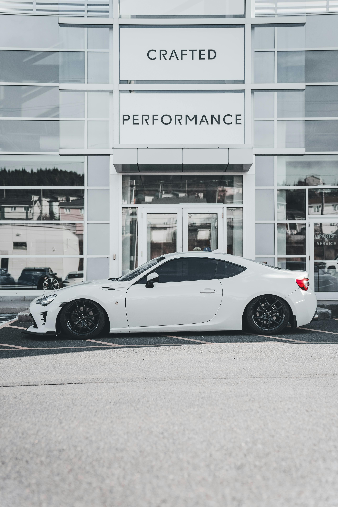

A ZARAKI SPORTS é reconhecida pela qualidade impecável de seus veículos e pelo atendimento excepcional, conquistando a confiança de seus clientes com uma seleção exclusiva de modelos sofisticados. Fundada em 23 de novembro de 2007, a empresa superou desafios significativos para se tornar a maior referência no mercado de carros de luxo. Com um compromisso inabalável com a excelência e a inovação, a ZARAKI SPORTS se destaca como um símbolo de prestígio, sempre em busca de novas oportunidades e transformando sonhos em realidade para os amantes de automóveis de luxo.